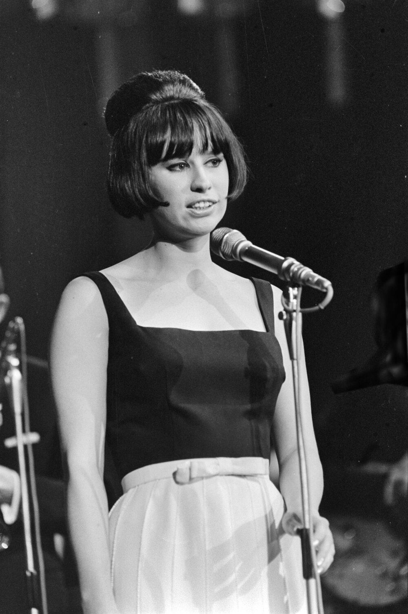

1960s easy listening music was the decade's cocktail-hour answer to the rock revolution.
Think lush strings, crooned vocals, and Brazilian rhythm, with Sinatra, Mancini, and a wave of bossa nova imports quietly ruling adult radio.

Table of Contents
- What Is 1960s Easy Listening Music
- The Billboard Easy Listening Chart
- The Crooners Who Ruled the Format
- Bossa Nova and the Sound of Brazil
- Instrumental Pop and Film Themes
- The Artists Who Defined the Sound
- FAQ
What Is 1960s Easy Listening Music
The format grew out of an earlier label, mood music, before Billboard renamed it.
Billboard's editors launched an Easy Listening programming guide on January 9, 1961.
A standalone Easy Listening chart followed that July.
It was built for adult listeners who wanted current hits.
That meant skipping the guitars and drums driving rock and roll radio.
The sound leaned on full orchestras, crooned standards, and film and television themes.
Eventually it absorbed the new bossa nova rhythms arriving from Brazil.
Instrumental singles could and did reach number one on the pop charts throughout the decade.
That was not limited to the easy listening chart alone.
From Mood Music to a Billboard Format
Radio stations wanted a way to play current pop hits while distancing themselves from rock and roll stations.
Billboard answered by carving a separate list out of its main pop chart.
That distinction mattered more every year as rock hardened through the decade.
By its second half, easy listening had become the clearest home for adult-aimed pop on American radio.
The Billboard Easy Listening Chart
The chart debuted in Billboard on July 17, 1961.
Brook Benton's The Boll Weevil Song became its first number one.
From 1961 to 1965, Billboard compiled it by pulling songs from the Hot 100.
Anything considered rock and roll got stripped out.
Starting in June 1965, the method changed entirely.
Billboard began ranking the format from radio station playlists and record store sales instead, independent of the Hot 100.
The chart later took the Adult Contemporary name in April 1979, per Wikipedia, the name it still carries today.
How the Chart Diverged from the Hot 100
Once Billboard stopped pulling directly from the Hot 100, the two charts told increasingly different stories.
Rock and soul dominated one list while orchestras and standards ruled the other.
By 1967, only one single managed to top both charts at the same time.
That single was Frank and Nancy Sinatra's duet Somethin' Stupid.
Its rarity says everything about how far the two audiences had split by the late 1960s.
The Crooners Who Ruled the Format
Frank Sinatra anchored the format for the entire decade.
Strangers in the Night won multiple Grammy Awards in 1967, despite Sinatra reportedly disliking the song.
My Way came out in 1969.
Paul Anka set an English lyric to a French melody, and it became one of Sinatra's most enduring recordings.
Tony Bennett built his own signature run alongside him.
I Left My Heart in San Francisco became Bennett's defining song and won him two Grammy Awards in 1963.
The Shadow of Your Smile followed in 1965.
It won the Academy Award for Best Original Song.
It later became a jazz standard in its own right.
Tony Bennett and the Great American Songbook
Bennett, Sinatra, Dean Martin, Perry Como, and Andy Williams all worked from the same Great American Songbook tradition.
Williams turned Mancini's Moon River into his own signature piece and later named his television variety show after it.
Ray Conniff took a different route, building hits from wordless vocal choruses set against light orchestral arrangements.
Together this group of voices kept adult pop radio filled through every year of the decade.
Bossa Nova and the Sound of Brazil
Stan Getz and Charlie Byrd's Jazz Samba album changed the format overnight after its release on April 20, 1962.
It became the only jazz album ever to reach number one on Billboard's pop albums chart.
It hit the top spot on March 9, 1963.
The album spent a total of 70 weeks on the chart.
It also won Getz a Grammy for Best Jazz Solo Performance.
Getz followed it with Desafinado, a Joao Gilberto collaboration whose title translates roughly as slightly out of tune.
That record helped ignite the wider American bossa nova craze of the early 1960s.
Astrud Gilberto's Accidental Vocal
The 1964 album Getz/Gilberto paired Stan Getz with Joao Gilberto and, almost by chance, Joao's wife Astrud.
Her English vocal on The Girl from Ipanema was recorded largely on the spot during the session.
The song won Record of the Year at the 1965 Grammy Awards, a first for a jazz recording.
Getz/Gilberto also took home Album of the Year the same night.
Antonio Carlos Jobim wrote the melody with Vinicius de Moraes.
Norman Gimbel supplied the English lyric that carried it onto American radio.
Instrumental Pop and Film Themes
Herb Alpert and the Tijuana Brass brought a bright, brass-driven instrumental sound to the format.
A Taste of Honey came from the 1965 album Whipped Cream and Other Delights.
It won Alpert four Grammy Awards, including Record of the Year, in 1966.
That album alone sold more than six million copies.
This Guy's in Love with You gave Alpert a rare turn as vocalist.
The Bacharach and David-written song became a number one single in 1968.
Herb Alpert and the Tijuana Brass Sound
Spanish Flea, another Tijuana Brass instrumental, later became widely known as a game show theme.
Henry Mancini worked the film side of the format with equal success.
Moon River was written with lyricist Johnny Mercer for Breakfast at Tiffany's.
It won the 1961 Academy Award for Best Original Song.
Days of Wine and Roses repeated the trick two years later.
Jazz guitarist Wes Montgomery crossed into the same pop-jazz territory late in the decade.
His octave-driven playing on Bumpin' on Sunset became a signature crossover moment.
The Artists Who Defined the Sound
These eight acts carried easy listening's crooner, bossa nova, and instrumental strands through the decade.
- Frank Sinatra, whose Strangers in the Night and My Way anchored the format start to finish
- Tony Bennett, whose I Left My Heart in San Francisco became his signature recording
- Dionne Warwick, the voice behind Bacharach and David's Walk On By and Alfie
- Herb Alpert & The Tijuana Brass, the brass-pop sound of A Taste of Honey
- Henry Mancini, the film composer behind Moon River and Days of Wine and Roses
- Stan Getz, who carried bossa nova onto American pop radio with Jazz Samba and Desafinado
- Astrud Gilberto, the accidental voice of The Girl from Ipanema
- Wes Montgomery, the jazz guitarist who crossed over with Bumpin' on Sunset
FAQ
What is 1960s easy listening music?
1960s easy listening music is the smooth, orchestra-backed pop of the decade.
It was built from crooned standards, bossa nova rhythms, and film and television themes.
Billboard tracked it on a dedicated chart starting in 1961.
That chart stood apart from the rock and roll dominating the Hot 100.
Who coined the term easy listening?
Billboard began publishing a chart under an Easy Listening programming guide on January 9, 1961.
A standalone chart followed that July.
The format itself had circulated earlier under the label mood music.
Billboard's editors later settled on the easy listening name.
What songs defined 1960s easy listening?
Frank Sinatra's Strangers in the Night and Henry Mancini's Moon River defined the format.
So did Herb Alpert's A Taste of Honey and Astrud Gilberto's The Girl from Ipanema.
Each one also crossed over to the Hot 100.
That became a rare feat once the two charts began to diverge after 1965.
What is the difference between easy listening and bossa nova?
Bossa nova is a specific Brazilian style built on samba rhythm and jazz harmony.
American audiences discovered it through Stan Getz and Joao Gilberto.
Easy listening is the broader American radio format that absorbed bossa nova alongside crooned standards and film scores.
It also included orchestral pop from acts like Ray Conniff.
Did easy listening chart-topping songs also top the Hot 100?
Occasionally, but it grew rarer as the decade went on.
After 1965 the Easy Listening chart was compiled from radio playlists and store sales, not the Hot 100.
By 1967 only Frank and Nancy Sinatra's Somethin' Stupid topped both charts at once.
1960s easy listening music proved that American pop radio never belonged to guitars alone.
Sinatra, Mancini, and the bossa nova wave kept adult audiences tuned in the whole decade.
Its biggest crossover writers, Bacharach and David, also powered the girl-group side of the Pop & Brill Building hub.
Its chart split from rock radio makes an instructive contrast against the guitar-driven British Invasion genre hub.
Test what you picked up with the What's Your 60s Sound? quiz and the 1960s Music Trivia tool.
Back to the 1960smusic.net homepage to explore every other genre that shaped the decade.